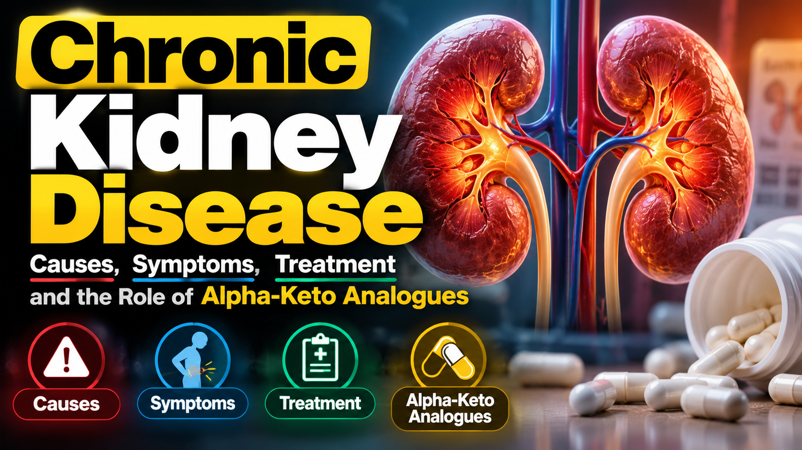

Kidney disease is broadly classified into two main types:
This is where the kidney gets affected suddenly. When we treat the cause, the kidney improves nearly to normal.
This means there is kidney disease present for more than three months. Chronic kidney disease is one of the leading causes of mortality and morbidity among all non-communicable diseases. Chronic kidney disease affects approximately 13.24% of adults in India. Based on recent community-based systematic reviews, India ranks second globally with an estimated 138 million cases of chronic kidney disease.
By gender, prevalence is roughly 14.8% for men and 13.51% for women. Surprisingly, by location, rural areas show a higher prevalence of chronic kidney disease at 15.34% compared to 10.65% in the urban regions.
This could be due to late detection, less awareness, and a variety of kidney diseases which are more prevalent in rural areas. Over time, national studies indicate an upward trend, rising in prevalence of chronic kidney disease from 11.12% during 2011-2017 to 16.38% during 2018-2023.
State-level data shows high prevalence in places like Haryana (316 per lakh population) and high mortality burdens in states like Telangana.
Now, coming to the causes of chronic kidney disease:
With India being the diabetes capital of the world, diabetes is the leading cause of chronic kidney disease. Along with hypertension, these two conditions are the leading drivers of CKD in India. A high prevalence of obesity, poor lifestyle, smoking, and rising metabolic syndrome significantly increases the risk of diabetes and hypertension, and hence chronic kidney disease.
Chronic glomerulonephritis.
The fourth, and most important nowadays in India, is chronic kidney disease of unknown origin. In certain rural pockets of Andhra Pradesh, Telangana, Odisha, Chhattisgarh, Madhya Pradesh, and West Bengal, there is a high prevalence of CKD among rural populations known as chronic kidney disease of unknown origin. In these patients, condition is relatively preserved until the end stage of the disease: they are not symptomatic, their appetite is okay, and there is no swelling of the feet, so they present late.
In the early stages of chronic kidney disease, signs and symptoms are almost nonexistent; it is asymptomatic. As it progresses, it causes swelling of the feet, swelling of the body, anemia, weakness, poor appetite, lethargy, breathing difficulty, and so forth, but mostly in the late stages.
Chronic kidney disease has different stages: stage 1, stage 2, stage 3, stage 4, stage 5, and stage 5 with renal replacement therapy. Renal Replacement Therapy: Dialysis and Kidney Transplant. When we talk about renal replacement therapy, there are three types:
Any kind of dialysis is costly, transportation is a problem, and maintenance of the treatment is a huge expense. When we talk about cost, it is not only a burden for the patient, but also for society and the government, especially where they provide free dialysis or free treatment after a transplant. It is basically a social burden.
The purpose of treatment for chronic kidney disease is to retard its progression so that it slows down and takes many years before reaching end stage. Chronic kidney disease will progress anyway, but we have to slow the rate of progression.
When we talk about diabetic kidney disease, which is the most common cause of chronic kidney disease, the main treatment involves:
When it comes to the pharmacological treatment of chronic kidney disease, including diabetic kidney disease, we have four pillars of medication:
However, we have seen that in spite of doing everything, controlling blood sugar, controlling blood pressure, and controlling the protein leakage in urine, the kidney disease progresses.
Now, one of the pillars of the treatment of chronic kidney disease is diet. When we talk about diet, we talk about protein intake. When we talk about protein intake, there are two key aspects:
Plant Versus Animal Protein: Plant protein is mainly alkali-inducing, whereas animal protein causes more acidosis. Because plant protein has less propensity to produce acidosis, it is believed to be more kidney-friendly.
Quantity of Protein Intake: Normal protein intake: 1 g/kg body weight in non-diabetic patients, and around 1.2 g/kg body weight in diabetic patients.
Chronic kidney disease (CKD): Protein intake is reduced to 0.6 g/kg body weight in non-diabetic patients, and 0.8 to 1 g/kg body weight in diabetic patients.
It has been found that certain amino acids cause more acid production, and those amino acids may be toxic for the kidney.
Alpha-keto analogues are nitrogen-free protein substitutes used alongside a low-protein diet to slow CKD progression and reduce uremic toxins without causing malnutrition. In CKD, we can reduce protein intake to 0.3 to 0.4 g/kg body weight to slow disease progression; however, the risk of developing malnutrition becomes very high. Studies have found that adding alpha-keto analogues, which lack the nitrogen component, helps mitigate this risk while managing nitrogen load. If we prescribe a very low protein diet, patients may develop malnutrition. To avoid that, we can supplement with alpha-keto analogues.
They provide the carbon skeleton of essential amino acids without an attached amino group. Because there is no amino group, nitrogen production is reduced; they capture excess waste nitrogen in the body to rebuild essential amino acids, cutting down urea production. Lower nitrogen waste reduces the workload and hyperfiltration stress on remaining nephrons. Therefore, they help safely maintain a very low protein diet (0.3 to 0.4 grams per kg body weight) to postpone end-stage kidney disease.
They also improve bone health by lowering serum phosphorus and parathyroid hormone levels in advanced CKD stages, and they preserve nutrition with proper nitrogen and protein balance without triggering protein-energy malnutrition.
Along with recommended therapies like RAAS inhibitors, SGLT2 inhibitors, finerenone, and GLP-1 receptor agonists, I strongly believe this dietary approach (a low-salt and limited-protein diet) forms the basis for the success of all these molecules. Alpha-keto analogues play a significant role in maintaining eGFR and retarding the progression of chronic kidney disease.
It has been mentioned in the KDIGO guidelines as a recommended therapy. While many supplements are available in India, those are not well-proven; however, KDIGO recommendations represent international society guidelines for the treatment of CKD. Alpha-keto analogues have a major role to play in retarding the progression of chronic kidney disease, so I hope patients will benefit from this therapy.